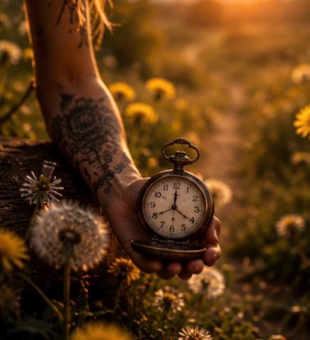

Du? Vi klarer 90 sekunder.
Jeg leste at en følelse bare varer i 90 sekunder hvis du ikke mater den.
Jeg vet ikke om det er sant. Jeg har ikke sjekket det. Kanskje gjør den det, kanskje gjør den det ikke. Det spiller egentlig ingen rolle.
Det som betyr noe er at jeg kan klare 90 sekunder.
Jeg kan klare å være sint i 90 sekunder. Jeg kan klare å være redd i 90 sekunder. Jeg kan klare å kjenne på savn i 90 sekunder. Jeg kan klare å være knust i 90 sekunder.
Nitti sekunder er overkommelig.
Ikke resten av livet. Ikke resten av uka. Ikke engang resten av dagen.
Bare nitti sekunder.
Så jeg puster. To raske pust inn gjennom nesa med munnen lukket. Har du prøvd det?
Å la kroppen gjøre det den er laget for å gjøre. Å puste.
Så setter jeg ord på det som skjer inni meg.
Jeg er sint.
Jeg er lei meg.
Jeg er redd.
Jeg føler meg alene.
Ikke «jeg er en fiasko». Ikke «livet mitt er håpløst». Bare et navn på følelsen. Akkurat nå.
Og når de 90 sekundene har gått, skjer det ofte noe rart. Ikke at følelsen forsvinner, men den slipper litt taket. Den går fra å være en kommandør til å bli en gjest. Fra en tsunami til en bølge.
Den er fortsatt der, men den bestemmer ikke lenger hva jeg skal gjøre.
For følelser er ikke ordre jeg må handle på. De er bare følelser. De ekte følelsene.
Ikke følelser regulert av alkohol. Ikke meg som trodde promille hjalp meg å gråte, danse, le, leve eller elske.
Nei. De ekte følelsene. Meg på ekte.
Meg som er redd. Meg som savner. Meg som kjenner meg alene. Meg som er sint. Meg som er glad. Meg som er sliten. Meg som er overveldet.
For følelsene kommer.
De kommer når noen sårer deg. Når livet gjør vondt. Når du ligger alene om kvelden. Når du kjenner på avvisning eller sorg. Men de kommer også når du kjenner på glede, mestring og takknemlighet. Når du kjenner på livet som ikke ble slik du trodde, men også livet som ble bedre enn du våget å håpe på.
De kommer når du minst ønsker dem velkommen.
Og det er det som gjør dette så innmari vanskelig.
For når alkoholen forsvinner, står du igjen med deg selv. Ikke den polerte versjonen. Ikke den bedøvde versjonen. Ikke den som kan skru av følelsene sine med noen glass.
Den ekte versjonen av deg.
Jeg tror ikke folk nødvendigvis faller fordi de ikke ønsker å slutte å drikke.
Jeg tror mange faller fordi de ikke vet hvordan de skal sitte alene med seg selv når følelsene kommer.
Så hør på meg, du som leser dette og føler at dette er helt håpløst:
Du klarer 90 sekunder.
Summen av mine 90 sekunder ble plutselig 228 dager.
I dag har jeg 228 dager edru. Men de dagene er tatt 90 sekunder av gangen.
Og det klarer vi.
